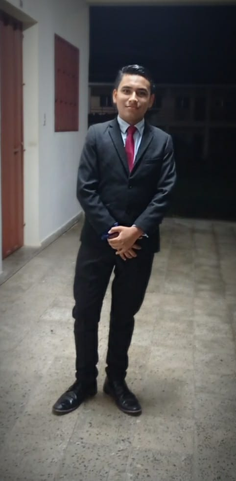

|
 |
Iván David Martínez BarrientosEstudiante de 12 BTP de Informatica Llevo la clase de Desarrollo Web apasionado por la tecnología y el diseño. Tengo 17 años Me gusta pasar tiempo con mi familia, salir a pasear, con mis compañeros risas y momentos unicos con personas verdaderas, viviendo momentos unicos con mis papas por que con ellos es que verdaderamente se vive la vida. Mi meta es graduarme |